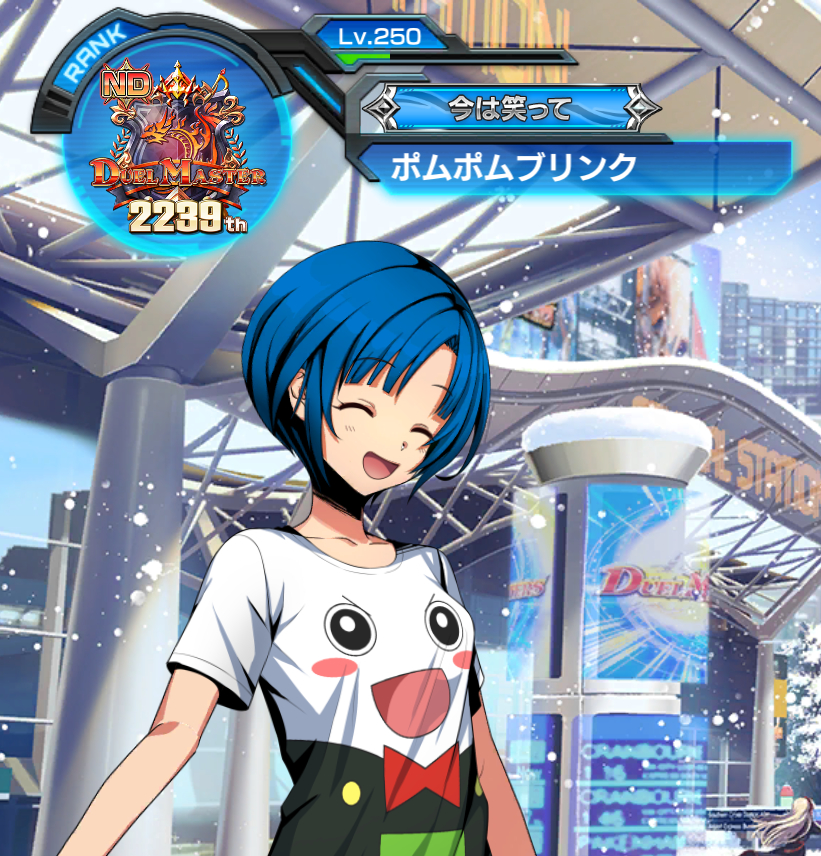
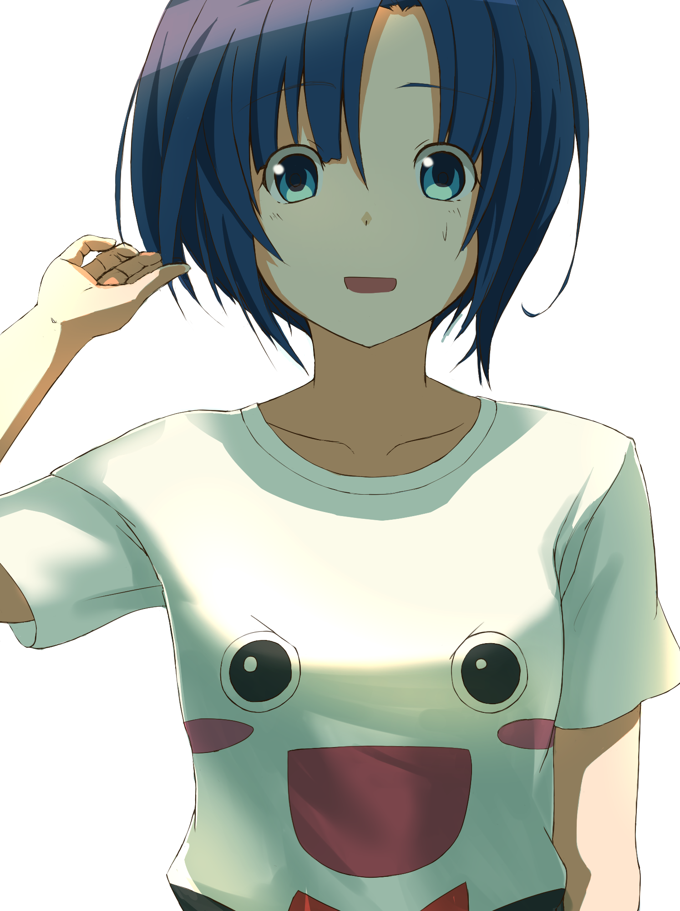
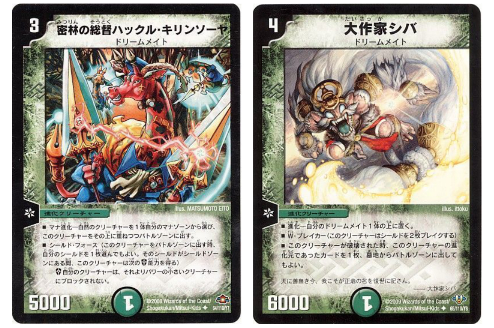
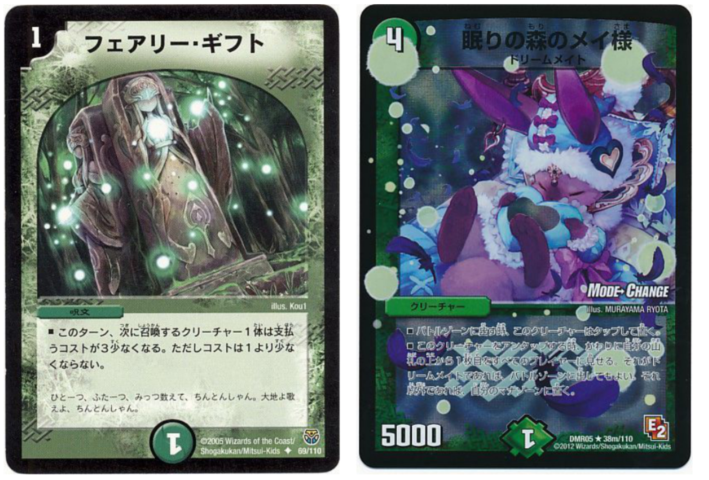

管理人


ポムポムブリンク / Gaku
日々デュエルマスターズを楽しんでいます。今では紙のほうは親戚が集まったときにボコられる程度で、wikiやコロコロwebで新カードを眺めて楽しんでいましたが、デュエプレがリリースされてからは一変。
20年来の友人やかつての同世代、また別世代の方々とアプリでデュエマができるのが嬉しくて仕方がないです。
~デュエルマスターズの思い出~
1. 幼少期に遊戯王カードを買ってもらうも、近所のアニキたちにシャークトレードされまくる（メタモルポッド、心変わりなど）
2. コロコロコミックのデュエル・マスターズがMTGからデュエマに切り替わり、1弾スターターデッキを買ってもらうことに成功する
3. 友人たちにメタ張りまくったエルフェウスとアウゼスの除去デッキでいい気になるも、大会で中学生の青単アストラル・リーフにボコボコにされて絶望する
4. 友人がお土産でカードパックを分けてくれるも、自分にアポロヌス・ドラゲリオンが当たってしまう事件が起こる。すまねぇ……と言いつつ、それをそっと自分のポケットに閉まう
5. 幸い友人たちや兄弟、親戚に大いに恵まれて、充実したデュエルマスターズライフをずっと送っている
お気に入り


ドリームメイトが特に好き。
今では核であるフェアリー・ギフトやヘブンズ・フォースが殿堂入りしてしまい、とうとう大人になった弟たちの環境デッキに勝てなくなってしまい、今はBOXの中で見守っている。
ドリームメイトで速攻デッキの奥深さに惚れ込み、今は赤黒レッドゾーンでなんとか環境についていこうと思案している。